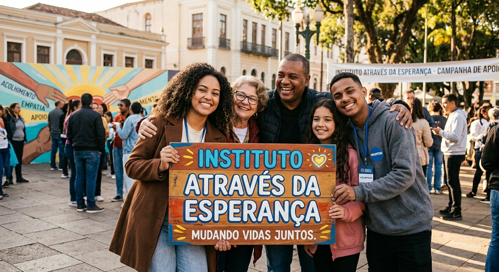

Nossos Projetos
O Instituto Através da Esperança desenvolve projetos sociais voltados à conscientização, solidariedade e participação da comunidade.
Conscientização nas Praças

O projeto promove encontros em praças públicas para levar informação à comunidade sobre temas sociais importantes, incentivando o diálogo, o respeito e a solidariedade.
Ações realizadas
- Distribuição de materiais informativos;
- Conversas e atividades de conscientização;
- Campanhas de solidariedade;
- Atividades educativas para crianças e adultos;
- Orientações sobre serviços e direitos sociais.
Praça da Esperança
Uma ação comunitária que reúne voluntários e moradores para transformar espaços públicos em locais de convivência, informação e apoio.
Atividades
- Rodas de conversa;
- Dinâmicas educativas;
- Campanhas de arrecadação;
- Distribuição de materiais de apoio;
- Atividades recreativas para a comunidade.
Campanha Mãos que Ajudam
A campanha incentiva a população a participar de ações voluntárias e colaborar com pessoas em situação de vulnerabilidade.
- Arrecadação de alimentos;
- Arrecadação de roupas;
- Doação de materiais de higiene;
- Mobilização de voluntários;
- Apoio às famílias atendidas pelo instituto.
Faça Parte
Quer participar das nossas ações? Acesse a página de cadastro e registre seu interesse em colaborar com o Instituto Através da Esperança.
Quero participar